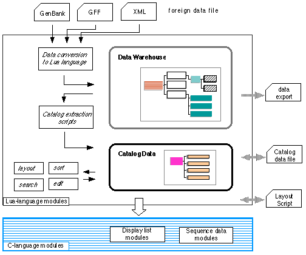

GUPPY has a 'on-memory database' for the annotation data, which is a 'data warehouse' for importing foreign data. The contents are usually described in the ascii text format in hierarchical tables. This is just like XML ( extended markup language), but Lua allows more flexible and dynamic data descriptions of variations of data schema. In addition, Lua is a programming language, so that format conversions and the data rearrangement tasks becomes very easy.
GUPPY Catalog format data
The primary annotation data format in GUPPY is called 'Catalog' format. It follows a grammar of the Lua language.
one={
{symbol="orf01", pos1=11,pos2=211},
{symbol="orf02", pos2=311,pos2=422},
